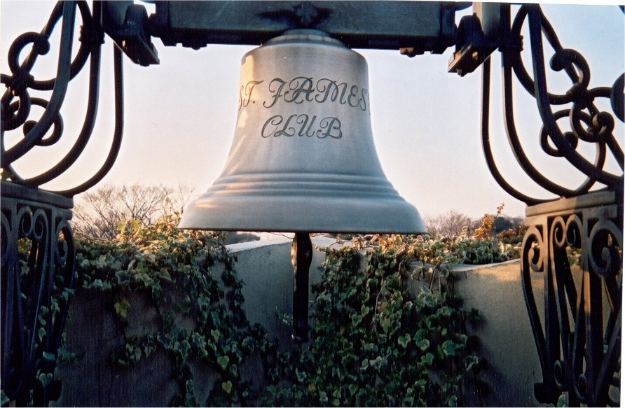
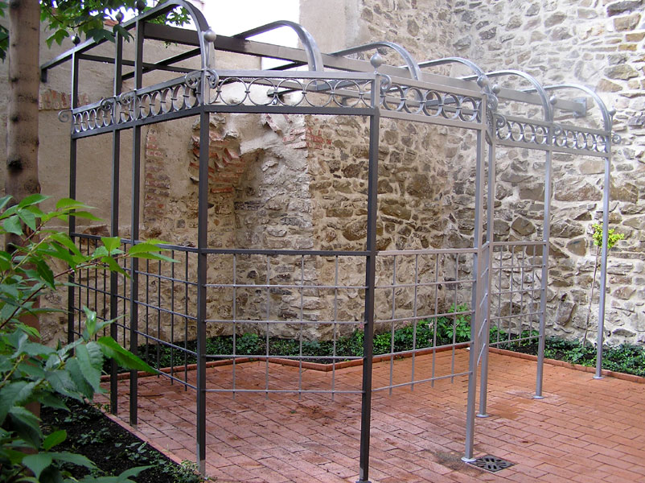
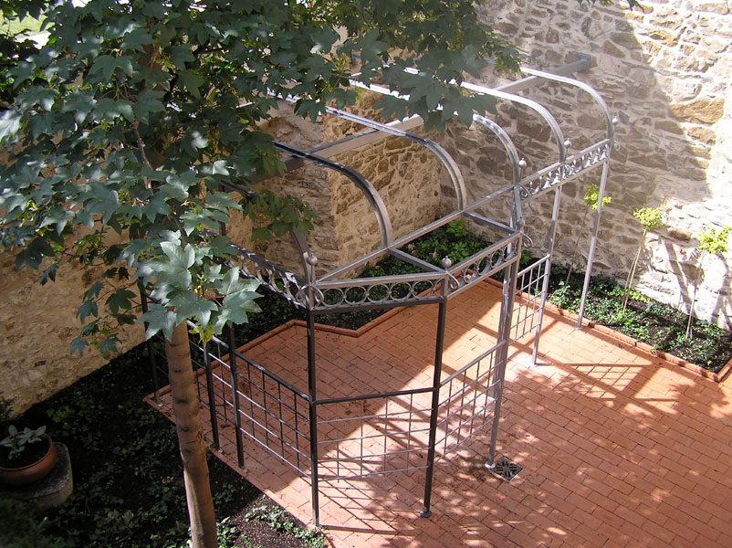
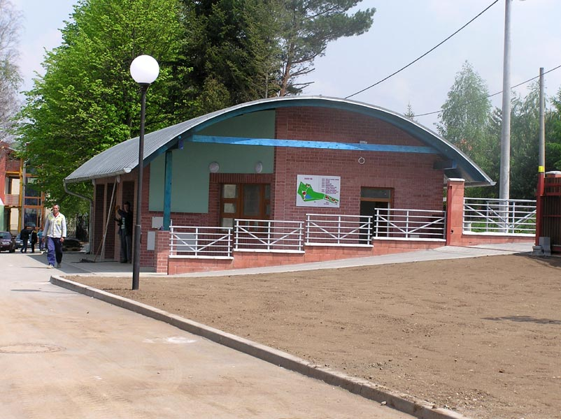
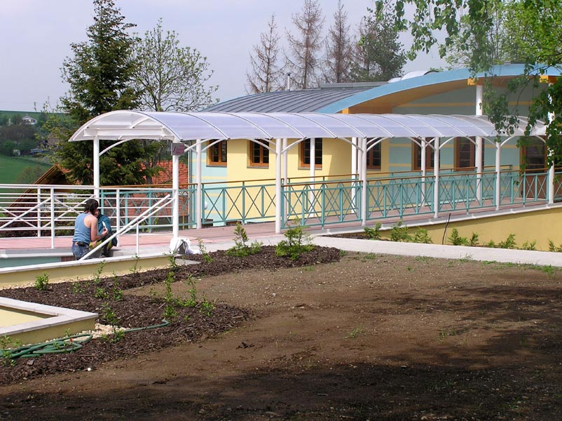
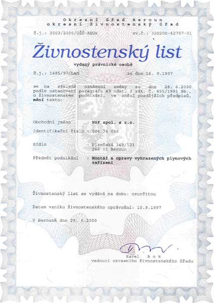
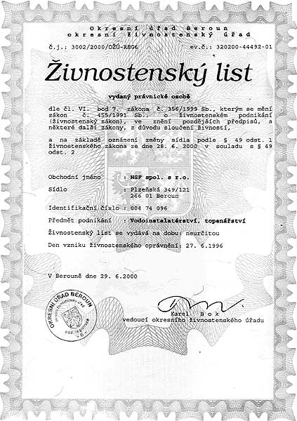
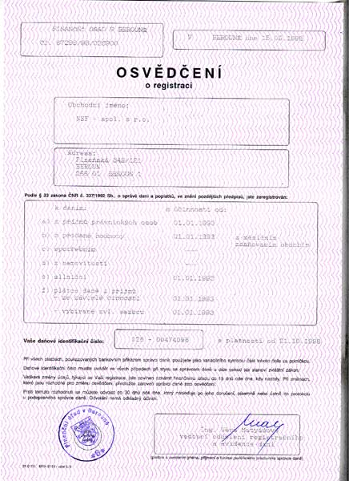

Více než 35 let poctivého zámečnického řemesla, ocelových konstrukcí a TZB instalací
Zajišťujeme kompletní výrobu a montáž ocelových hal, samonosných bran a plotů, autorizované instalace systémů Hörmann, rozvody plynu i vlastní prodejnu železářství a hutního materiálu v Berouně.

Kovovýroba Ing. Zdeněk Macourek
Od rodinné zámečnické dílny po komplexního partnera pro průmyslové stavby a domovní instalace na Berounsku.
Kombinace tradiční zámečnické zručnosti a moderních TZB technologií
Společnost NSF - spol. s r.o. navazuje na tradici firmy Kovovýroba Ing. Zdeněk Macourek založené v Berouně již v roce 1990. Během více než tří dekád jsme vybudovali silné technické zázemí, které v sobě spojuje těžkou i lehkou kovovýrobu s certifikovanými montážemi plynových kotelen a potrubních rozvodů.
Naše výrobní portfolio zahrnuje ocelové skelety hal, schodiště, mříže a pojezdové brány i dodávky certifikovaných vratových systémů německého výrobce Hörmann.
Zákazníkům nabízíme výhodu uceleného řetězce: od technického návrhu, přes výrobu ve vlastních dílnách a povrchové úpravy žárovým zinkováním, až po finální montáž a vystavení revizních zpráv pro plyn a elektro.
V areálu na Plzeňské ulici v Berouně navíc provozujeme specializovanou prodejnu železářství a hutních profilů s možností okamžitého dělení tyčí a nosníků na míru.
Cesta vývoje a milníky společnosti NSF
Založení firmy v Berouně
Založení zámečnické výroby Ing. Zdeňkem Macourkem se zaměřením na zakázkové ocelové konstrukce a zámečnictví.
Rozšíření o Vodo-Topo-Plyn
Získání oprávnění TIČR pro montáž a opravy vyhrazených plynových zařízení a realizace prvních průmyslových kotelen.
Partnerství Hörmann & Soláry
Autorizovaná certifikace pro dodávky a montáže pohonů a vrat Hörmann a montáže solárních termických panelů.
Stabilní partner pro stavby
Komplexní dodávky ocelových konstrukcí a TZB technologií pro generální dodavatele i soukromé investory.
Sortiment ocelových konstrukcí a TZB služeb
Každá položka obsahuje detailní technické specifikace, materiálové složení a normové certifikace.

ČSN EN 1090-2Stavební ocelové konstrukce a haly
Výroba a montáž nosných ocelových konstrukcí budov, průmyslových hal, skladových přístřešků, ocelových lávek, schodišť a technologických plošin.

Autorizovaný partner HörmannOcelová vrata, ploty, branky a zábradlí
Zakázková výroba posuvných samonosných bran, vjezdových vrat, bezpečnostních mříží a zábradlí pro občanskou i průmyslovou výstavbu.

Oprávnění TIČR pro plynPrůmyslové montáže vodo-topo-plyn a kotelny
Kompletní realizace kotelen, rozvodů plynu, vytápění, solárních kolektorů a zdravotechniky pro bytové domy, obce i průmyslové objekty.

Kamenná prodejna BerounSpecializované železářství a hutní materiál Beroun
Zásobování řemeslníků, stavebních firem i kutilů spojovacím a hutním materiálem, nářadím, kotevní technikou, těsněním a kamnářským zbožím.
Certifikace, živnostenská oprávnění a normy



Zámečnická dílna a prodejna Beroun
Rádi prokonzultujeme vaše stavební výkresy, navrhneme rozpočet ocelové konstrukce nebo zajistíme topenářské instalace.
Plzeňská 349/121, Beroun-Město
266 01 Beroun
Poptávkový formulář
Zašlete nám zadání zámečnických prací, konstrukce nebo vytápění. Ozveme se vám do 24 hodin.